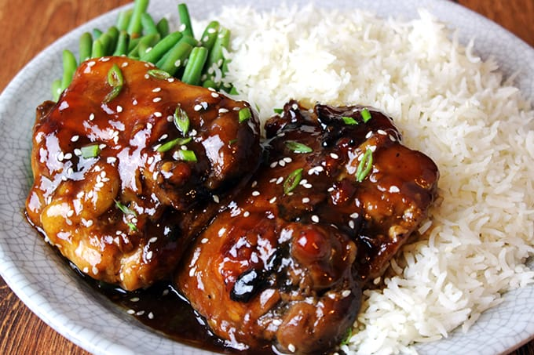

Go back to main menu
Baked Teriyaki Chicken

What is Teriyaki Chicken?
Teriyaki chicken is simply chicken that is coated in teriyaki sauce.
The dish comes from the Japanese cooking technique called teriyaki, where meat is grilled or broiled with a soy sauce, mirin, and sugar glaze. Today, teriyaki chicken refers to any chicken with teriyaki sauce — regardless of the cooking method.
Ingredients
- 12 boneless, skinless chicken thighs
- ½ cup soy sauce
- ½ cup white sugar
- ¼ cup cider vinegar
- 1 tablespoon cornstarch
- 1 tablespoon cold water
- 1 clove garlic, minced
- ½ teaspoon ground ginger
- ¼ teaspoon ground black pepper
Directions
- Preheat the oven to 425 degrees F (220 degrees C). Lightly grease a 9x13-inch baking dish.
- Combine sugar, soy sauce, cider vinegar, cornstarch, cold water, garlic, ginger, and pepper in a small saucepan over low heat.
- Simmer, stirring frequently, until teriyaki sauce thickens and bubbles, 3 to 5 minutes.
- Remove from the heat.
- Place chicken thighs in the prepared baking dish.
- Brush both sides of each thigh with the sauce. Reserve any extra sauce for basting.
- Bake in the preheated oven for 30 minutes.
- Flip chicken and brush with sauce. Continue to bake, basting with remaining sauce every 10 minutes, until no longer pink and juices run clear, 20 to 30 more minutes.
- Serve with hot steaming rice.